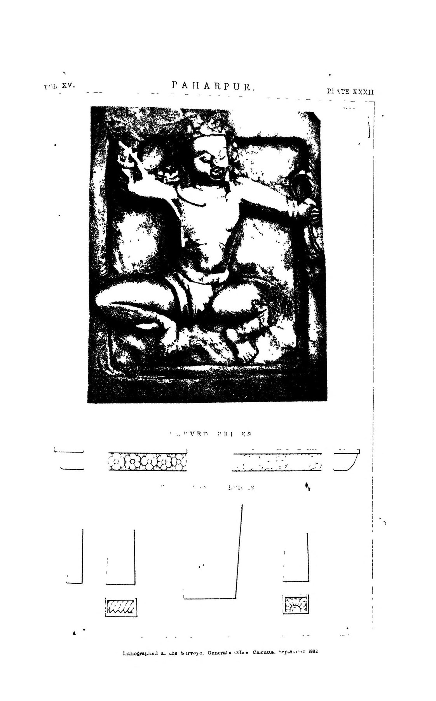

🧱 RESTORATION ETHICS · ANASTYLOSIS
কোনটা হাজার বছরের ইট, কোনটা আধুনিক মেরামত?
একটি প্রত্নদেয়ালের পাশে দাঁড়িয়ে প্রশ্নটা স্বাভাবিক: যেটা দেখছি, সেটা কতটুকু আসল? এই পাতা দাবি নয়, চোখে পড়তে শেখা — নীতি, রঙিন স্তরে বোঝানো নমুনা, নিজে যাচাইয়ের সূত্র আর ১৪০+ বছর আগের রূপের পাশাপাশি আজকের ছবি।
ANASTYLOSIS LAYER · শিক্ষামূলক ডেমো
রঙিন স্তরে আসল বনাম সংস্কার
নিচের দেয়াল-ছবিটি একটি শিক্ষামূলক নমুনা রেখাচিত্র — কোনো নির্দিষ্ট আসল দেয়ালের সরকারি মূল্যায়ন নয়। বোতাম চাপলেই দেখবেন, সংরক্ষণ-মানচিত্রে সাধারণত অংশগুলো কীভাবে আলাদা করা হয়।
রঙের অর্থ
মূল প্রাচীন গাঁথুনি — ভেঙে পড়েনি এমন আদি অংশ
অ্যানাস্টাইলোসিস — ছড়িয়ে থাকা আসল খণ্ড সঠিক জায়গায় পুনঃস্থাপন
আধুনিক সহায়ক গাঁথুনি — কাঠামো বাঁচাতে নতুন ইট-গুরুত্বের কাজ
আধুনিক সুরক্ষা — দেয়ালমাথার ঢালাই-টুপি, নিষ্কাশন
হারানো অংশ — যেখানে প্রমাণ নেই, সেখানে গড়া হয়নি
ভালো সংরক্ষণের লক্ষণ: দূর থেকে দৃশ্যটি সম্পূর্ণ লাগে, কিন্তু কাছে গেলেই নতুন কাজ আলাদা চোখে পড়ে — যেন ভবিষ্যতের গবেষক বুঝতে পারেন কোনটি হস্তক্ষেপ।
READ THE WALL
মাঠে চেনার ৬টি সূত্র
সূত্রগুলো পর্যবেক্ষণের দিশারি; নিশ্চিত সিদ্ধান্তের জন্য খনন-ছবি ও সংরক্ষণ-প্রতিবেদনই ভরসা।
HISTORIC PHOTOGRAPHY & PLATES
১৮৮২-এর প্লেটের পাশাপাশি আজ
স্লাইডারটি টেনে মেলান: বাঁয়ে কানিংহামের ১৮৮২ সালের প্রতিবেদনের পাহাড়পুর টেরাকোটা-প্লেট (খননের আগের যুগের দলিল, রেখাচিত্র), ডানে আজকের আকাশছবি (খনন ও সংরক্ষণের পরের রূপ)। মাধ্যম আলাদা — তবে বদলের গল্পটা এখান থেকেই পড়া শুরু হয়।


DISCOVERY → CONSERVATION
আবিষ্কার থেকে সংরক্ষণ — সময়রেখা
CHARTERS & LAW